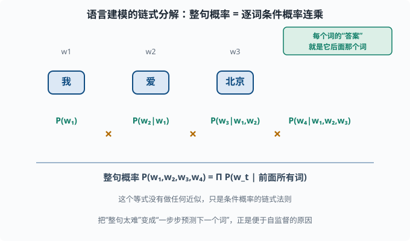
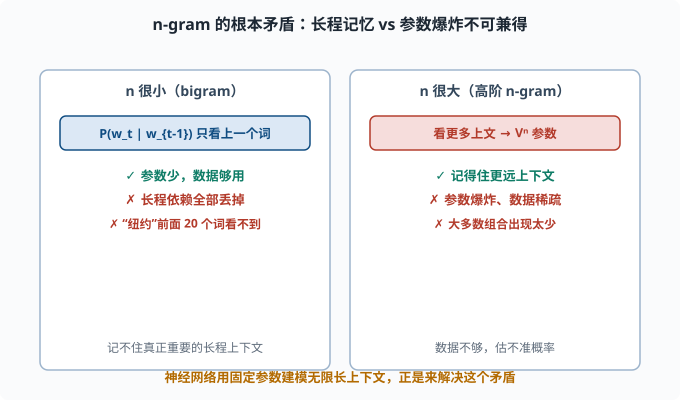
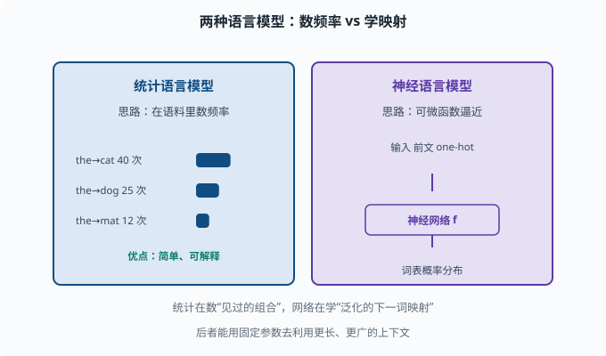
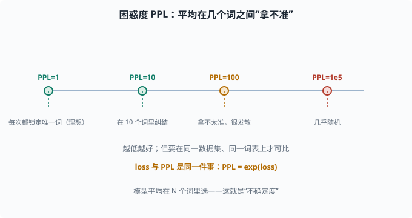

语言模型的起点：从统计到"预测下一个词"
目标：建立"语言模型 = 一键预测下一个词概率"的心智模型。读完这一页，你能从 n-gram 讲清楚语言模型的目标函数，并明白它和大语言模型（LLM）的关系。
一切为什么从"统计语言模型"开始
人类理解语言的能力看起来可以拆成很多子任务：语法、语义、常识、推理。但在计算机看来，这些都没法直接"喂"给模型。机器学习需要一个明确的目标。
统计语言模型（Statistical Language Model）给了 NLP 一个奇迹般的简洁目标：
给定一句话的前面一部分，模型预测下一个最可能出现的词。
也就是建模：
P(下一个词 | 已经看到的词)
这个目标妙在：
- 自监督：不需要人工标注。海量文本里，每个词本来就有"真实答案"（它就是紧接着出现的那个词）。
- 可扩展：互联网上有无穷的文本，语料越大自监督数据越多。
- 一石多鸟：要"猜对下一个词"，模型其实被迫掌握了语法、语义、常识、推理。因为只有真理解这些，才能预测得准。
你把"预测下一个词"练到极致，得到的**大语言模型（LLM）**做翻译、摘要、问答全部由此而来。这是 06 LLM 原理 的种子。
全序列概率：链式分解
一个更完整的问题是：给定一段词序列，整个序列出现的概率是多少？
用条件概率的链式规则把它拆成"逐词的条件概率"：
P(w1, w2, ..., wT)
= P(w1) * P(w2|w1) * P(w3|w1,w2) * ... * P(wT|w1,...,wT-1)
= Π_t P(w_t | w_1 ... w_{t-1})
这就是"语言建模"的数学定义：把整句概率拆成一系列"在已知前文下预测下一个词"的条件概率的连乘。 只要能把每一个条件概率估好，整个句子就能算出来。
要注意的是：这个等式没有做任何近似，它只是概率论里的链式法则。它把"整句太难"的问题，变成了"一步步预测下一个词"的问题——这正是便于自监督的原因。

上图把一句话 w₁ w₂ w₃ w₄ 的概率从左到右逐词拆开：第一项直接是 P(w₁)，第二项在已知 w₁ 下预测 w₂，第三项在已知 w₁,w₂ 下预测 w₃，依次类推。每一步的"答案"都藏在文本自身里（下一个真实的词），所以这条链天然支持自监督训练。注意绿色小字的提示：这个分解是精确的，不是近似。
n-gram：马尔可夫假设的限制
先朴素地想：P(w_t | w_1...w_{t-1}) 里依赖的词越多，参数就越多。假设词表有 V 个词，要估计 P(w_t | w_{t-1}, w_{t-2})（称 三元组 trigram），可能的参数组合就有 V³ 量级。V 一旦上万，这就是天文数字，还要求语料里每种组合都出现足够多次才估得准。
为解决数据稀疏，n-gram 用马尔可夫假设做近似：只依赖最近 n-1 个词（即假设"未来只由最近几步决定"，01-09 的马尔可夫性质是同一思想）。
bigram： P(w_t | w_{t-1})
trigram： P(w_t | w_{t-2}, w_{t-1})
代价是"只看最近 n-1 个词"。长距离的上下文（比如"纽约"在前面 20 个词外的地名）被丢掉，模型记不住真正重要的长程依赖。n 一旦大了，参数又爆炸。
这就是统计语言模型的根本矛盾：
依赖太少（n 小）→ 记不住长程上下文
依赖太多（n 大）→ 参数爆炸、数据不够

左框是 n 很小的情形（bigram）：参数少、数据够用，但只记得上一个词，长程依赖被全部丢掉；右框是 n 很大的高阶 n-gram：记得远一些，但参数以 Vⁿ 量级爆炸、大多数组合在语料里出现太少、估不准。这就是"依赖太少"和"依赖太多"之间的死结。
现代神经网络语言模型解决了这个矛盾：用固定规模的参数，去建模无限长的上下文。这是 05-06 和 06 章的真正意义。
从"计数"到"学习"：神经语言模型
统计语言模型靠"在语料里数频率"来估计 P（最大似然估计）。神经语言模型换了个思路：不直接数频率，而是用一个可微的函数（神经网络）去逼近"预测下一个词"的映射。
基本形式（你已经在 04-04 损失函数 见过）：
给定前文 → 模型输出整个词表上的概率分布
损失 = -log(真实下一个词的预测概率) （交叉熵）
训练时喂进海量文本，让模型尽量让"真实下一个词"的概率最大，这等价于最小化交叉熵。语言模型的训练和 03-03 的多分类本质完全一样——只是类别变成了"整个词表"，数据变成了"预测下一个词"。

上图把两种语言模型并排放置：左边蓝色的是统计语言模型，靠"在语料里数频率"来估计 P（比如 the→cat 出现多少次），简单、可解释，但只能记住"见过多少次"；右边紫色的是神经语言模型，它不数频率，而是用一个可微的神经网络去逼近"给定前文 → 词表概率分布"这个映射。区别的关键在于：统计模型在"数见过的组合"，网络在"学一个能泛化的下一词函数"，所以后者能用固定规模的参数去利用更长、更广的上下文。
困惑度：语言模型的好坏衡量
语言模型的传统质量指标是困惑度（perplexity，PPL），定义为交叉熵的指数：
PPL = exp(交叉熵)
直觉：模型平均下来在几个词之间"拿不准"。
PPL = 1 → 模型每次都精确锁定下一个词（完美但不可能）
PPL = N → 模型每次大致在 N 个词里纠结
困惑度越低越好，但横向比较要在同一数据集、同一词表上做才有意义（不同分词会让 PPL 不可比，这又是 05-03 的伏笔）。

上图用一条数轴给你困惑度的"体感"：最左端 PPL=1 意味着模型每次都精确锁定唯一的下一个词（理想但几乎不可能）；随着 PPL 增大，模型平均在 10 个、100 个甚至更多候选词之间"纠结"。左下角琥珀色提示它和 loss 的关系 PPL = exp(loss)——两者是同一件事的两种标度。记住一点：比较 PPL 必须在同一数据集、同一词表上做，否则不同的分词方式会让数字失去可比性。
一个最小可运行的 bigram 模型
用最朴素的统计方法，你也能亲手"训练"一个语言模型：
from collections import defaultdict, Counter
text = "the cat sat on the mat . the dog sat on the mat .".split()
bigrams = defaultdict(Counter)
for w1, w2 in zip(text[:-1], text[1:]):
bigrams[w1][w2] += 1
def prob(w1, w2):
total = sum(bigrams[w1].values())
return bigrams[w1][w2] / total if total else 0
print("P(dog|the) =", prob("the", "dog")) # 0.25
print("P(mat|the) =", prob("the", "mat")) # 0.5
这就是一个完全意义上的"统计语言模型"：给定 the，它告诉你下一个词的概率分布。虽然笨得可以、记不住长上文，但"预测下一个词"的骨架已经立起来了。
这一页的长远价值
这一页可能是通向 LLM 最重要的"单点悟"：
大语言模型做的一切 = 极致的"预测下一个词"。
语言理解的各种能力，是在把这个任务学到极致的过程中涌现的。
当你之后在 06 章见到"预训练目标 = next token prediction"，请回看这里——它只是一个被神经网络和海量数据放大的统计语言模型。
思考题
- 语言建模的目标函数是什么？为什么它属于"自监督"而非"需要人工标注"？
- 用链式法则把整句概率写成逐词条件概率，这个等式是否做了近似？
- n-gram 靠什么假设来简化模型？它带来的根本矛盾是什么？
- 神经语言模型相比"数频率"的统计模型，关键区别是什么？
- 困惑度 PPL 为 1 和 PPL 为 1000 各代表什么？
参考答案
- 目标是建模"给定前文预测下一个词"的条件概率
P(w_t|w_1...w_{t-1})。它的"答案"就是文本里自然紧跟着的那个词，无需人工标注，所以是自监督。 - 没有做任何近似。它只是条件概率的链式规则，逐项把整句概率分解成条件概率连乘，严格成立。
- 靠马尔可夫假设：只依赖最近 n-1 个词。根本矛盾是"n 太小记不住长程依赖、n 太大参数和数据都爆炸"，两者不可兼得。
- 统计模型靠语料中数频率来估计概率；神经模型用一个可微网络去逼近"下一词分布"这个映射，能借助固定参数量去利用更长上下文、并自动学到泛化表示。
- PPL=1 表示模型每次都能精确锁定唯一的下一个词（理想上界）；PPL=1000 表示模型大致在约 1000 个词之间纠结、非常不确定。越低越好。
下一步
- 想让"词"拥有可计算的语义 → 05-02 词表示。
- 想知道文本怎么被切成模型认识的 token → 05-03 子词分词。
- 想从"预测下一个词"走到真正能落地的序列模型 → 05-04 Seq2Seq。